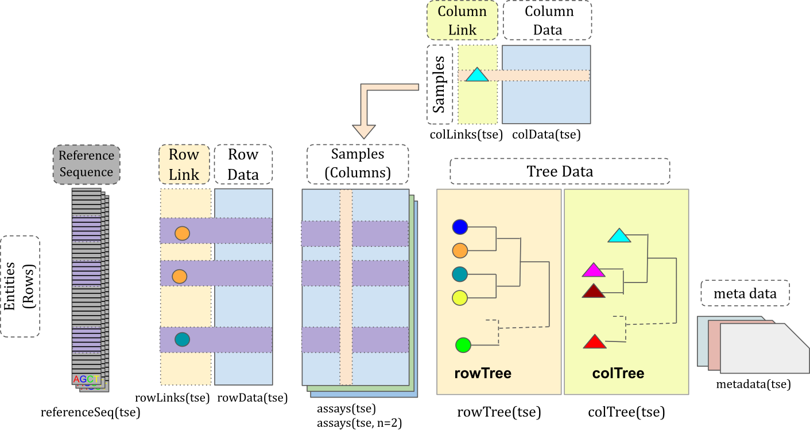
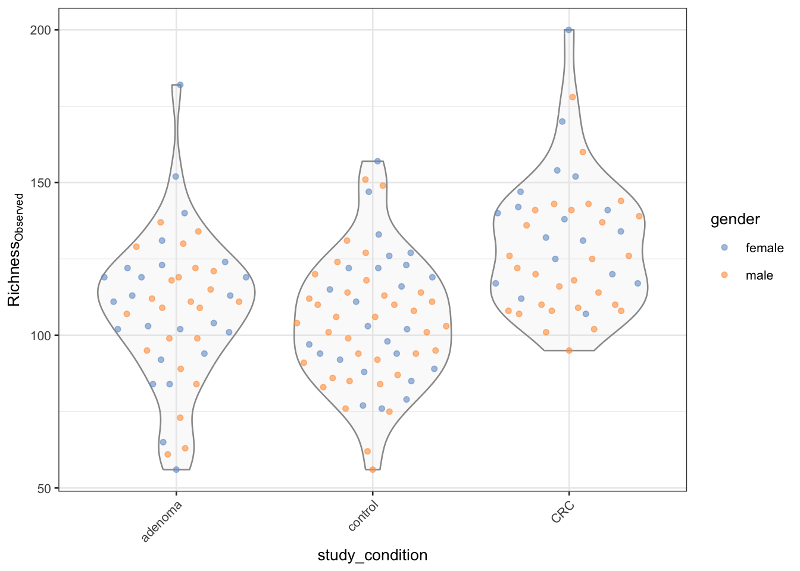
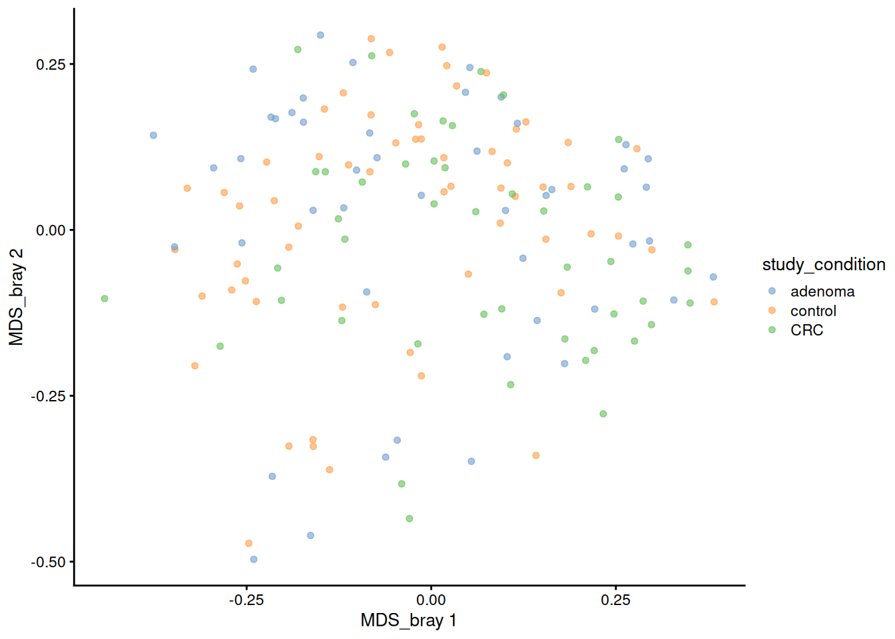
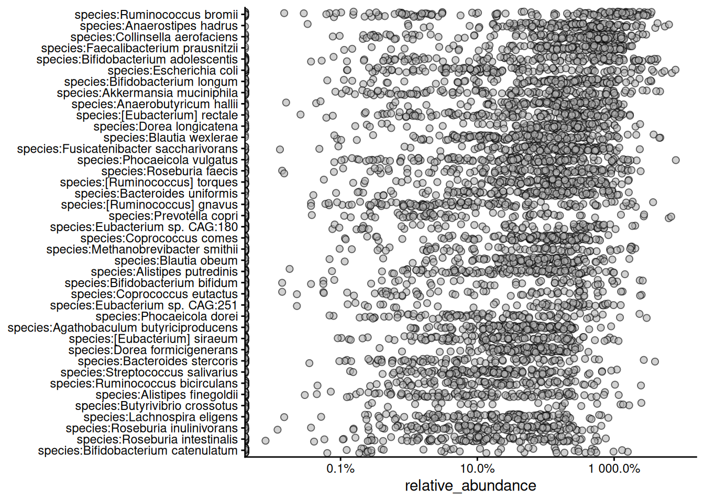
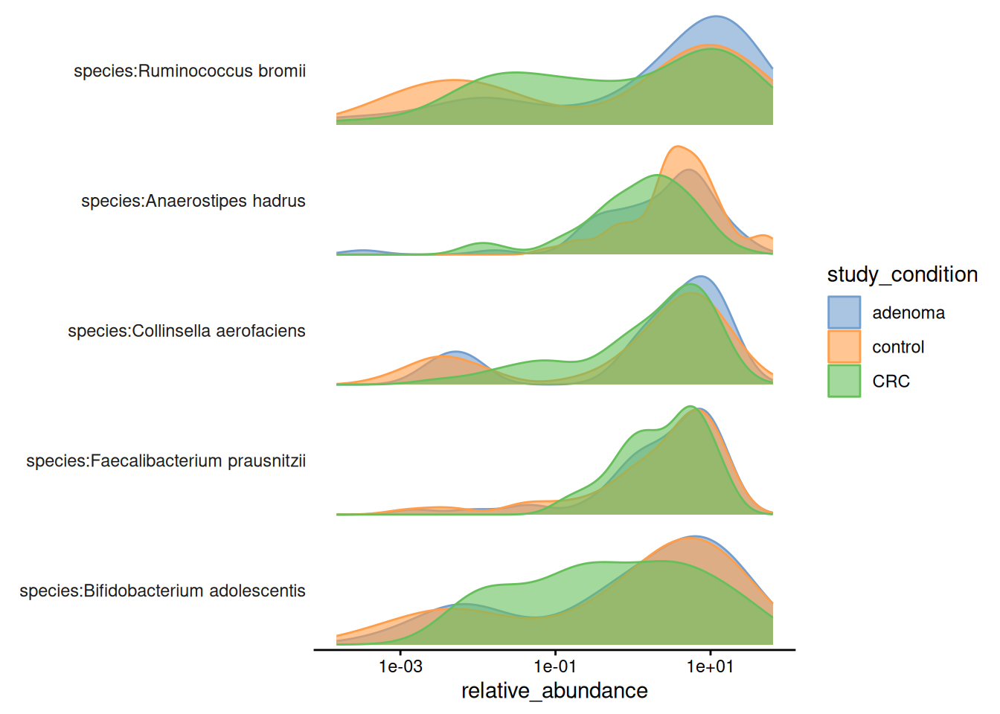
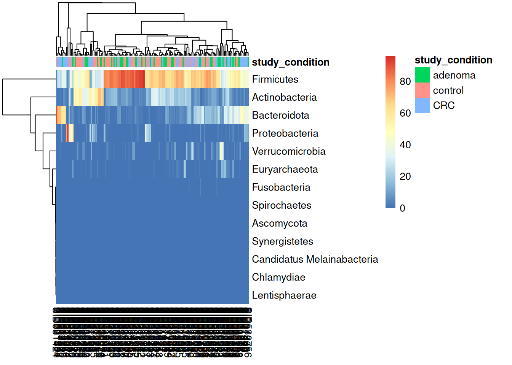
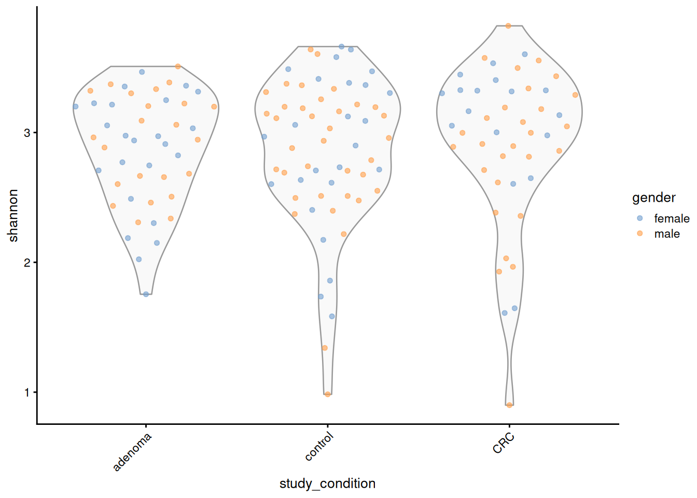

# Install the mia package (a normal Bioconductor install)
BiocManager::install("mia")27 Analyzing microbiome data
The human microbiome is a crowded ecosystem of bacteria, viruses, fungi, and other microorganisms living in and on the human body. These microbes shape human health and disease, influencing everything from digestion and metabolism to immune function and mood. Working out which microbes are present, in what proportions, and how those proportions shift between healthy and sick people is one of the most active areas in biology today.
In this chapter you’ll take a curated gut-microbiome dataset from a colorectal cancer study, load it into R, and ask the kinds of questions a microbiome researcher asks: How diverse is each sample? Do cancer patients and controls separate when you compare whole communities? Which microbes dominate? You’ll do all of this without leaving a single, self-describing data object.
We’ll assume the raw sequencing data has already been processed into a tidy abundance table, so you can focus on the analysis rather than the bioinformatics that came before it.
27.1 What you’ll learn
By the end of this chapter you will be able to:
- Load a curated microbiome dataset as a
TreeSummarizedExperimentobject. - Reach into its parts with
assays(),colData(),rowData(), androwTree(). - Subset samples and agglomerate features to a coarser taxonomic rank.
- Compute alpha diversity (within a sample) and beta diversity (between samples).
- Visualize community composition with abundance plots, an ordination, and a heatmap.
This chapter builds directly on the SummarizedExperiment chapter. A TreeSummarizedExperiment is a SummarizedExperiment with a couple of extra parts, so if the three-linked-sheets idea (assays, rowData, colData) isn’t fresh, skim that chapter first.
27.2 Getting started
We’ll lean on the mia package (short for microbiome analysis) throughout this chapter. It provides a suite of tools for loading, transforming, and visualizing microbiome data, all built around the SummarizedExperiment and TreeSummarizedExperiment classes you’ll meet below.
mia is a released Bioconductor package, so you install it the usual way with BiocManager. If you don’t already have BiocManager itself, install that first (see the Bioconductor installation chapter), then run:
Note
mia is a standard, released Bioconductor package. The BiocManager::install("mia") call above pulls the stable version that matches your Bioconductor release — the same way you install every other Bioconductor package in this book.
Once mia is installed, load it into your R session:
Now that the mia package is loaded, we can load the microbiome dataset that we will be working with.
27.3 Accessing microbiome datasets
There are many publicly available microbiome datasets you can use for analysis. Bioconductor provides several packages that bundle curated microbiome datasets, making it easy to load real data into R without first wrangling raw sequencing files.
curatedMetagenomicData is a large collection of curated human microbiome datasets, provided as TreeSE objects (Pasolli et al. 2017). The resource provides curated human microbiome data including gene families, marker abundance, marker presence, pathway abundance, pathway coverage, and relative abundance for samples from different body sites. See the package homepage for more details on data availability and access.
The microbiomeDataSets package provides a collection of curated microbiome datasets for teaching and research purposes. The package contains several example datasets that can be used to explore different aspects of microbiome analysis, such as alpha and beta diversity, differential abundance analysis, and visualization.
The mia package and several other packages provide example datasets for learning and testing the functions in the package. These datasets are typically small and easy to work with, making them ideal for learning how to analyze microbiome data in R.
27.4 Data containers
Bioconductor provides several specialized data structures for storing and working with microbiome data in R. These data structures are designed to handle the complex and high-dimensional nature of microbiome data and provide a convenient and efficient way to store, manipulate, and analyze microbiome data in R.
SummarizedExperiment (SE) (Morgan et al. 2020) is a generic, highly optimized container for complex experimental data. It has become a common choice for many kinds of biomedical profiling data, such as RNA-seq, ChIP-seq, microarrays, flow cytometry, proteomics, and single-cell sequencing.
TreeSummarizedExperiment (Huang 2020) extends that container to carry hierarchical information — phylogenetic trees and sample hierarchies — alongside the usual assays and metadata.
NoteA mental model: three linked sheets, plus a tree
In the SummarizedExperiment chapter you met the three linked sheets picture: an assay sheet of numbers (features × samples), a row sheet (rowData) describing each feature, and a column sheet (colData) describing each sample, all locked together so they can never drift out of sync.
A TreeSummarizedExperiment is exactly those three sheets with one more piece pinned to the side: a phylogenetic tree (rowTree) that records how the features — the microbes — are related to one another by evolution. When you drop a microbe from the object, it drops from the tree too. So everything you already know about reaching into a SummarizedExperiment carries over here; the tree is the only genuinely new idea.
27.5 Loading a microbiome dataset
We will be using the curatedMetagenomicData package to load the FengQ_2015 dataset. This dataset contains microbiome data from a study by Feng et al. (2015). The curatedMetagenomicData package provides a convenient interface for accessing microbiome datasets that have been pre-processed and curated for analysis.
Note
Take a moment to read at least the title and abstract of the paper. We won’t reproduce its analysis, but connecting the code in this workflow to the underlying biology and research question will make everything that follows more meaningful.
# Again, before using a package, we must install it
# just once.
BiocManager::install('curatedMetagenomicData')Once installed, we can use the package.
Ignore the details of the next few lines of code for now, but suffice it to say that what the code will do for us is to load a dataset for downstream analysis.
# Load the FengQ_2015 dataset
library(curatedMetagenomicData)
tse <- curatedMetagenomicData("FengQ_2015.relative_abundance", dryrun = FALSE, rownames = "short")[[1]]
$`2021-03-31.FengQ_2015.relative_abundance`
dropping rows without rowTree matches:
k__Bacteria|p__Actinobacteria|c__Coriobacteriia|o__Coriobacteriales|f__Atopobiaceae|g__Olsenella|s__Olsenella_profusa
k__Bacteria|p__Actinobacteria|c__Coriobacteriia|o__Coriobacteriales|f__Coriobacteriaceae|g__Collinsella|s__Collinsella_stercoris
k__Bacteria|p__Actinobacteria|c__Coriobacteriia|o__Coriobacteriales|f__Coriobacteriaceae|g__Enorma|s__[Collinsella]_massiliensis
k__Bacteria|p__Firmicutes|c__Bacilli|o__Bacillales|f__Bacillales_unclassified|g__Gemella|s__Gemella_bergeri
k__Bacteria|p__Firmicutes|c__Bacilli|o__Lactobacillales|f__Carnobacteriaceae|g__Granulicatella|s__Granulicatella_elegans
k__Bacteria|p__Firmicutes|c__Clostridia|o__Clostridiales|f__Ruminococcaceae|g__Ruminococcus|s__Ruminococcus_champanellensis
k__Bacteria|p__Firmicutes|c__Erysipelotrichia|o__Erysipelotrichales|f__Erysipelotrichaceae|g__Bulleidia|s__Bulleidia_extructa
k__Bacteria|p__Proteobacteria|c__Betaproteobacteria|o__Burkholderiales|f__Sutterellaceae|g__Sutterella|s__Sutterella_parvirubra
k__Bacteria|p__Synergistetes|c__Synergistia|o__Synergistales|f__Synergistaceae|g__Cloacibacillus|s__Cloacibacillus_evryensisDuplicated labels were made unique.This code goes out to the internet and downloads the dataset for you. The tse object is a TreeSummarizedExperiment object that contains the microbiome data from the Feng et al. (2015) study. The TreeSummarizedExperiment class is a specialized data structure for storing microbiome data in R, and it is used by the mia package for microbiome analysis.
Tip
If you are working with your own microbiome data, you will often need to load it into R using functions like read.csv() or read.table() to read tabular data files. Make sure your data is properly formatted and cleaned before loading it into R for analysis.
Once the data is loaded, you can start exploring its structure and contents. The tse object is a TreeSummarizedExperiment. You can think of it as a richer relative of a data.frame: it has many specialized slots for storing the parts of a microbiome experiment, laid out in Figure 27.1. We’ll use a handful of accessor functions to look inside it. See the TreeSummarizedExperiment package for the full details.
In microbiome data science, containers like this one link a taxonomic abundance table to rich side information about both the features (the microbes) and the samples. That abundance data can come from 16S rRNA amplicon sequencing, metagenomic sequencing, phylogenetic microarrays, or other methods. A single experiment often holds several versions of the data at once — raw counts plus transformed or agglomerated versions derived from them — and the container keeps them all together.

To get an overview of the data, we can simply type the name of the object in the R console:
# Print the object
tseclass: TreeSummarizedExperiment
dim: 606 154
metadata(0):
assays(1): relative_abundance
rownames(606): species:Faecalibacterium prausnitzii
species:Streptococcus salivarius ... species:Lactobacillus
kullabergensis species:Lactobacillus kimbladii
rowData names(7): superkingdom phylum ... genus species
colnames(154): SID31004 SID31009 ... SID532832 SID532915
colData names(28): study_name subject_id ... triglycerides hba1c
reducedDimNames(0):
mainExpName: NULL
altExpNames(0):
rowLinks: a LinkDataFrame (606 rows)
rowTree: 1 phylo tree(s) (10430 leaves)
colLinks: NULL
colTree: NULLRead that printout like the label on a box. The dim line tells you how many features (rows) and samples (columns) you have; the assays, colData, rowData, and rowTree lines preview the parts described above. Notice that the numbers themselves are not printed — the dataset is far too large for that — so R shows you the shape and the index of contents instead.
Next, we’ll look at some of the key components of the TreeSummarizedExperiment object and how to access and manipulate them.
27.5.1 Experimental measurements: assays
When you work with high-throughput biological data, the result of the workflow usually resembles an Excel spreadsheet: samples down the columns, features (genes, microbes, CpG sites, …) down the rows. The numbers in that grid are called assay data, because they come from running an assay — a measurement of the presence and abundance of something. For a microbiome study, an assay tells you how much of each microbe is in each sample.
The original measurements are count-based, but those counts are often transformed — into logarithms, Centered Log-Ratio (CLR) values, or relative abundances — for different analyses. A single object can hold all of these versions at once, so the assays slot is a list of matrices rather than a single one.
assays(tse)List of length 1
names(1): relative_abundanceAn individual assay is reached with the assay() function (singular), which returns a single matrix. Recall that to subset a matrix you use [<rows>, <columns>], so here we ask for just the first five rows and columns to keep the output readable:
# just the first 5 rows and columns to make the results easier to see
assay(tse, "relative_abundance")[1:5, 1:5] SID31004 SID31009 SID31021 SID31030
species:Faecalibacterium prausnitzii 13.58862 5.18307 6.09213 2.79834
species:Streptococcus salivarius 11.00755 0.13897 0.17498 0.15692
species:Anaerostipes hadrus 8.26264 7.55176 8.26219 1.07529
species:Bacteroides stercoris 5.21961 0.00000 0.01189 0.59787
species:Collinsella aerofaciens 4.58481 3.68522 2.67519 2.19600
SID31071
species:Faecalibacterium prausnitzii 12.96581
species:Streptococcus salivarius 0.26242
species:Anaerostipes hadrus 3.07124
species:Bacteroides stercoris 0.06529
species:Collinsella aerofaciens 7.94793The values are relative abundances — each column sums to 1 across all microbes in that sample. Choose a different number of rows or columns if you like.
27.5.2 Sample information: colData
The colData holds everything you know about the samples. For a study like this one, that can include the sample ID, the type of sample (fecal, soil, mock, …), the subject’s age and sex, the disease status, and any experimental details you care to track (prep kit lot number, sequencing run, and so on).
colData(tse)DataFrame with 154 rows and 28 columns
study_name subject_id body_site antibiotics_current_use
<character> <character> <character> <character>
SID31004 FengQ_2015 SID31004 stool no
SID31009 FengQ_2015 SID31009 stool no
SID31021 FengQ_2015 SID31021 stool no
SID31030 FengQ_2015 SID31030 stool no
SID31071 FengQ_2015 SID31071 stool no
... ... ... ... ...
SID532796 FengQ_2015 SID532796 stool no
SID532802 FengQ_2015 SID532802 stool no
SID532826 FengQ_2015 SID532826 stool no
SID532832 FengQ_2015 SID532832 stool no
SID532915 FengQ_2015 SID532915 stool no
study_condition disease age age_category
<character> <character> <integer> <character>
SID31004 CRC CRC;fatty_liver;hype.. 64 adult
SID31009 control fatty_liver;hyperten.. 68 senior
SID31021 control healthy 60 adult
SID31030 adenoma adenoma;fatty_liver;.. 70 senior
SID31071 control fatty_liver 68 senior
... ... ... ... ...
SID532796 control fatty_liver;hyperten.. 73 senior
SID532802 control healthy 68 senior
SID532826 control T2D;fatty_liver;hype.. 78 senior
SID532832 adenoma adenoma;fatty_liver;.. 68 senior
SID532915 control healthy 43 adult
gender country non_westernized sequencing_platform
<character> <character> <character> <character>
SID31004 male AUT no IlluminaHiSeq
SID31009 male AUT no IlluminaHiSeq
SID31021 female AUT no IlluminaHiSeq
SID31030 male AUT no IlluminaHiSeq
SID31071 male AUT no IlluminaHiSeq
... ... ... ... ...
SID532796 female AUT no IlluminaHiSeq
SID532802 male AUT no IlluminaHiSeq
SID532826 male AUT no IlluminaHiSeq
SID532832 female AUT no IlluminaHiSeq
SID532915 female AUT no IlluminaHiSeq
DNA_extraction_kit PMID number_reads number_bases
<character> <character> <integer> <numeric>
SID31004 MoBio 25758642 40898340 3649611221
SID31009 MoBio 25758642 66107961 6196998053
SID31021 MoBio 25758642 60789126 5708593447
SID31030 MoBio 25758642 50300253 4741158330
SID31071 MoBio 25758642 51945426 4913627034
... ... ... ... ...
SID532796 MoBio 25758642 50845712 4754848864
SID532802 MoBio 25758642 41480415 3868696049
SID532826 MoBio 25758642 35346002 3348368467
SID532832 MoBio 25758642 42184599 3951224696
SID532915 MoBio 25758642 51594677 4886998833
minimum_read_length median_read_length NCBI_accession
<integer> <integer> <character>
SID31004 30 93 ERR688505;ERR688358
SID31009 30 96 ERR688506;ERR688359
SID31021 30 96 ERR688507;ERR688360
SID31030 30 96 ERR688508;ERR688361
SID31071 30 97 ERR688509;ERR688362
... ... ... ...
SID532796 30 95 ERR710428;ERR710419
SID532802 30 96 ERR710429;ERR710420
SID532826 30 97 ERR710430;ERR710421
SID532832 30 96 ERR710431;ERR710422
SID532915 30 96 ERR710432;ERR710423
curator BMI disease_subtype diet
<character> <numeric> <character> <character>
SID31004 Paolo_Manghi;Marisa_.. 29.35 carcinoma vegetarian
SID31009 Paolo_Manghi;Marisa_.. 32.00 NA omnivore
SID31021 Paolo_Manghi;Marisa_.. 22.10 NA omnivore
SID31030 Paolo_Manghi;Marisa_.. 34.11 advancedadenoma omnivore
SID31071 Paolo_Manghi;Marisa_.. 23.45 NA omnivore
... ... ... ... ...
SID532796 Paolo_Manghi;Marisa_.. 26.56 NA omnivore
SID532802 Paolo_Manghi;Marisa_.. 23.53 NA omnivore
SID532826 Paolo_Manghi;Marisa_.. 31.22 NA omnivore
SID532832 Paolo_Manghi;Marisa_.. 27.55 advancedadenoma omnivore
SID532915 Paolo_Manghi;Marisa_.. 22.65 NA omnivore
hdl ldl tnm triglycerides hba1c
<numeric> <numeric> <character> <numeric> <numeric>
SID31004 28 92 t1n0m0 172 5.2
SID31009 50 157 NA 101 NA
SID31021 60 122 NA 53 NA
SID31030 74 146 NA 89 NA
SID31071 40 231 NA 258 NA
... ... ... ... ... ...
SID532796 61 114 NA 100 5.4
SID532802 67 158 NA 80 5.8
SID532826 32 90 NA 212 6.9
SID532832 51 184 NA 141 5.6
SID532915 80 132 NA 51 5.1There is a lot here. Scan the column names: alongside identifiers you’ll find biologically interesting variables such as study_condition (whether the subject had colorectal cancer or was a control), age, and gender. These are exactly the variables you’ll group and color by when you compare diversity and composition later in the chapter.
TipTreat
colData as your sample database
By keeping a reasonably complete colData, you can answer questions about your findings without flipping back to an external Excel spreadsheet or a lab notebook. The metadata travels with the data.
27.5.3 Measured feature information: rowData
The rowData describes the features — here, the microbes. In microbiome work this is where taxonomic information lives: the kingdom, phylum, class, order, family, genus, and species of each detected organism. That taxonomy is what lets you identify which microbes are present and connect community composition to environmental or health factors.
DataFrame with 6 rows and 7 columns
superkingdom phylum class
<character> <character> <character>
species:Faecalibacterium prausnitzii Bacteria Firmicutes Clostridia
species:Streptococcus salivarius Bacteria Firmicutes Bacilli
species:Anaerostipes hadrus Bacteria Firmicutes Clostridia
species:Bacteroides stercoris Bacteria Bacteroidota Bacteroidia
species:Collinsella aerofaciens Bacteria Actinobacteria Coriobacteriia
species:Bifidobacterium longum Bacteria Actinobacteria Actinomycetia
order family
<character> <character>
species:Faecalibacterium prausnitzii Eubacteriales Oscillospiraceae
species:Streptococcus salivarius Lactobacillales Streptococcaceae
species:Anaerostipes hadrus Eubacteriales Lachnospiraceae
species:Bacteroides stercoris Bacteroidales Bacteroidaceae
species:Collinsella aerofaciens Coriobacteriales Coriobacteriaceae
species:Bifidobacterium longum Bifidobacteriales Bifidobacteriaceae
genus species
<character> <character>
species:Faecalibacterium prausnitzii Faecalibacterium Faecalibacterium pra..
species:Streptococcus salivarius Streptococcus Streptococcus saliva..
species:Anaerostipes hadrus Anaerostipes Anaerostipes hadrus
species:Bacteroides stercoris Bacteroides Bacteroides stercoris
species:Collinsella aerofaciens Collinsella Collinsella aerofaci..
species:Bifidobacterium longum Bifidobacterium Bifidobacterium longumEach row is one microbe, and the columns walk down the taxonomic hierarchy from broad (phylum) to specific (species).
27.5.4 rowTree
A phylogenetic tree records evolutionary relationships, and microbiome analysis leans on it heavily. A TreeSummarizedExperiment tracks features and their positions in the tree through two accessors, rowTree() and rowLinks().
The tree itself is reached with rowTree(), which returns a phylo object — R’s standard representation of a tree.
NoteWhat is this tree of which we speak?
The “tree” in a TreeSummarizedExperiment is a phylogenetic tree: it describes the inferred evolutionary relationships among species (or other entities) based on similarities and differences in their genetic or physical characteristics. The famous “tree of life” is one such tree, showing how all living organisms on Earth are related.
In microbiome analysis, phylogenetic trees represent how the different microbial taxa in a sample are related by descent. This matters because it lets you ask not just which microbes are present, but how closely related they are — two samples can share no exact species yet still host very similar branches of the tree.
The phylo class is R’s standard structure for holding such trees, and the ggtree package is the popular tool for drawing them.
rowTree(tse)
Phylogenetic tree with 10430 tips and 10429 internal nodes.
Tip labels:
k__Archaea|p__Candidatus_Micrarchaeota|c__Candidatus_Micrarchaeota_unclassified|o__Candidatus_Micrarchaeota_unclassified|f__Candidatus_Micrarchaeota_unclassified|g__Candidatus_Micrarchaeota_unclassified|s__Candidatus_Micrarchaeota_archaeon_CG1_02_55_22, k__Archaea|p__Archaea_unclassified|c__Archaea_unclassified|o__Archaea_unclassified|f__Archaea_unclassified|g__Archaea_unclassified|s__archaeon_GW2011_AR15, k__Archaea|p__Candidatus_Diapherotrites|c__Candidatus_Diapherotrites_unclassified|o__Candidatus_Diapherotrites_unclassified|f__Candidatus_Diapherotrites_unclassified|g__Candidatus_Diapherotrites_unclassified|s__Candidatus_Diapherotrites_archaeon_CG08_land_8_20_14_0_20_34_12, k__Archaea|p__Archaea_unclassified|c__Archaea_unclassified|o__Archaea_unclassified|f__Archaea_unclassified|g__Archaea_unclassified|s__archaeon_GW2011_AR10, k__Archaea|p__Candidatus_Diapherotrites|c__Candidatus_Diapherotrites_unclassified|o__Candidatus_Diapherotrites_unclassified|f__Candidatus_Diapherotrites_unclassified|g__Candidatus_Diapherotrites_unclassified|s__Candidatus_Diapherotrites_archaeon_CG11_big_fil_rev_8_21_14_0_20_37_9, k__Archaea|p__Euryarchaeota|c__Euryarchaeota_unclassified|o__Euryarchaeota_unclassified|f__Euryarchaeota_unclassified|g__Euryarchaeota_unclassified|s__Euryarchaeota_archaeon_TMED173, ...
Rooted; includes branch length(s).The printed phylo object summarizes the tree: how many tips (one per microbe) and internal nodes it has. We can draw it with the ggtree package, which renders trees in several layouts (rectangular, circular, radial). Here’s the default rectangular view of this study’s tree:
Don’t try to read individual tips — at this scale the value is the overall shape, which shows how the detected microbes fan out across the branches of life. See the ggtree package and the ggtree book for much more on tree visualization.
The companion accessor rowLinks() records which tip of the tree each feature corresponds to — the bookkeeping that keeps the assay rows and the tree in step:
rowLinks(tse)LinkDataFrame with 606 rows and 5 columns
nodeLab nodeLab_alias
<character> <character>
species:Faecalibacterium prausnitzii k__Bacteria|p__Firmi.. alias_3547
species:Streptococcus salivarius k__Bacteria|p__Firmi.. alias_4750
species:Anaerostipes hadrus k__Bacteria|p__Firmi.. alias_3579
species:Bacteroides stercoris k__Bacteria|p__Bacte.. alias_5690
species:Collinsella aerofaciens k__Bacteria|p__Actin.. alias_3019
... ... ...
species:Streptococcus gallolyticus k__Bacteria|p__Firmi.. alias_4745
species:Lactobacillus apis k__Bacteria|p__Firmi.. alias_4851
species:Anaerostipes sp. 494a k__Bacteria|p__Firmi.. alias_3580
species:Lactobacillus kullabergensis k__Bacteria|p__Firmi.. alias_4855
species:Lactobacillus kimbladii k__Bacteria|p__Firmi.. alias_4854
nodeNum isLeaf whichTree
<integer> <logical> <character>
species:Faecalibacterium prausnitzii 3547 TRUE phylo
species:Streptococcus salivarius 4750 TRUE phylo
species:Anaerostipes hadrus 3579 TRUE phylo
species:Bacteroides stercoris 5690 TRUE phylo
species:Collinsella aerofaciens 3019 TRUE phylo
... ... ... ...
species:Streptococcus gallolyticus 4745 TRUE phylo
species:Lactobacillus apis 4851 TRUE phylo
species:Anaerostipes sp. 494a 3580 TRUE phylo
species:Lactobacillus kullabergensis 4855 TRUE phylo
species:Lactobacillus kimbladii 4854 TRUE phyloBoth rowTree and rowLinks are optional parts of a TreeSummarizedExperiment, but when present they carry the evolutionary structure that distinguishes this class from a plain SummarizedExperiment.
27.6 Wrangling and subsetting
A major advantage of the SummarizedExperiment family is that a single object encapsulates everything needed to describe the samples (colData), the measured features (rowData, rowTree), and the measurements themselves (assays). When you subset or manipulate the object, every one of those parts is subset to match — automatically, in lockstep.
The mia package adds functions for filtering, transforming, and reshaping microbiome data on top of that foundation.
27.6.1 Subsetting samples
You subset the samples in a TreeSummarizedExperiment much as you would the columns of a data.frame. Say you want to focus on older subjects. First, look at the age column in colData:
Because reaching into colData is such a common operation, you can also grab a column directly with $, as if the object were a data frame:
head(tse$age)[1] 64 68 60 70 68 66# and get a summary of all patient ages
summary(tse$age) Min. 1st Qu. Median Mean 3rd Qu. Max.
43.00 63.00 68.00 66.85 72.00 86.00 Age is a numeric variable. Let’s focus on older patients.
# Include all rows, but only columns (samples) who are older than 50
tse_subset_by_age <- tse[, tse$age > 50]
tse_subset_by_ageclass: TreeSummarizedExperiment
dim: 606 146
metadata(0):
assays(1): relative_abundance
rownames(606): species:Faecalibacterium prausnitzii
species:Streptococcus salivarius ... species:Lactobacillus
kullabergensis species:Lactobacillus kimbladii
rowData names(7): superkingdom phylum ... genus species
colnames(146): SID31004 SID31009 ... SID532826 SID532832
colData names(28): study_name subject_id ... triglycerides hba1c
reducedDimNames(0):
mainExpName: NULL
altExpNames(0):
rowLinks: a LinkDataFrame (606 rows)
rowTree: 1 phylo tree(s) (10430 leaves)
colLinks: NULL
colTree: NULLtse_subset_by_age is a copy of the original tse holding only the 50-and-older subjects. To double-check, look at the ages in the new object — the minimum should now be above 50:
summary(tse_subset_by_age$age) Min. 1st Qu. Median Mean 3rd Qu. Max.
52.00 63.25 68.00 68.02 72.00 86.00 27.6.2 Agglomerating data
The microbiome features (organisms) that are measured may be measured at different taxonomic levels. For example, the data may be available at the species, genus, family, or phylum level. Agglomerating data is the process of summarizing the data at a higher taxonomic level by combining the abundances of the lower-level taxa. This can be useful for simplifying the data and reducing the dimensionality of the data.
The agglomerateByRank function in the mia package can be used to agglomerate the data at a specified taxonomic rank. For example, to agglomerate the data at the phylum level, you can use the following code:
new_tse <- agglomerateByRank(tse, rank = "phylum")
# observe the new object, particularly the number of features (rows)
new_tseclass: TreeSummarizedExperiment
dim: 13 154
metadata(1): agglomerated_by_rank
assays(1): relative_abundance
rownames(13): Actinobacteria Ascomycota ... Synergistetes
Verrucomicrobia
rowData names(7): superkingdom phylum ... genus species
colnames(154): SID31004 SID31009 ... SID532832 SID532915
colData names(28): study_name subject_id ... triglycerides hba1c
reducedDimNames(0):
mainExpName: NULL
altExpNames(0):
rowLinks: a LinkDataFrame (13 rows)
rowTree: 1 phylo tree(s) (13 leaves)
colLinks: NULL
colTree: NULLCompare the number of features (rows) in new_tse to the original tse: collapsing hundreds of species into a few dozen phyla shrinks the data dramatically. That makes the data easier to plot and interpret, at the cost of fine-grained detail — a trade-off you’ll make often.
27.7 Community indices
Microbiome ecology offers many indices that summarize a sample, or compare a community of samples. Here we give just a brief introduction to two broad flavors: alpha diversity (diversity within a single sample) and beta diversity (how different two samples are from each other).
27.7.1 Alpha diversity
Diversity within a sample is captured by several related indices:
- species richness — the total number of species present;
- equitability — how evenly the species are distributed;
- diversity — a combination of the two.
mia provides functions for all of these. The addAlpha() function calculates one or more indices and stores the results automatically in colData, right alongside your sample metadata.
NoteWhy do we care about alpha diversity?
Alpha diversity is a single number that captures how complex or “diverse” one microbiome sample is. Plenty of things can shift it — antibiotic use, chemotherapy, autoimmune conditions, dietary changes, and more.
When you compare two groups (say, antibiotic users versus non-users), a significant difference in alpha diversity between them can point you toward real biology, or even toward a useful biomarker.
In the code below we calculate the Shannon and observed diversity indices.
[1] "study_name" "subject_id"
[3] "body_site" "antibiotics_current_use"
[5] "study_condition" "disease"
[7] "age" "age_category"
[9] "gender" "country"
[11] "non_westernized" "sequencing_platform"
[13] "DNA_extraction_kit" "PMID"
[15] "number_reads" "number_bases"
[17] "minimum_read_length" "median_read_length"
[19] "NCBI_accession" "curator"
[21] "BMI" "disease_subtype"
[23] "diet" "hdl"
[25] "ldl" "tnm"
[27] "triglycerides" "hba1c"
[29] "shannon" "observed" The observed index simply counts the species present in a sample, while the shannon index also accounts for how evenly abundant those species are. Notice from the printed column names that both new indices now live in colData, ready to plot or model.
Look at the full colData() and you’ll see the new diversity columns sitting beside the original sample metadata:
colData(tse)DataFrame with 154 rows and 30 columns
study_name subject_id body_site antibiotics_current_use
<character> <character> <character> <character>
SID31004 FengQ_2015 SID31004 stool no
SID31009 FengQ_2015 SID31009 stool no
SID31021 FengQ_2015 SID31021 stool no
SID31030 FengQ_2015 SID31030 stool no
SID31071 FengQ_2015 SID31071 stool no
... ... ... ... ...
SID532796 FengQ_2015 SID532796 stool no
SID532802 FengQ_2015 SID532802 stool no
SID532826 FengQ_2015 SID532826 stool no
SID532832 FengQ_2015 SID532832 stool no
SID532915 FengQ_2015 SID532915 stool no
study_condition disease age age_category
<character> <character> <integer> <character>
SID31004 CRC CRC;fatty_liver;hype.. 64 adult
SID31009 control fatty_liver;hyperten.. 68 senior
SID31021 control healthy 60 adult
SID31030 adenoma adenoma;fatty_liver;.. 70 senior
SID31071 control fatty_liver 68 senior
... ... ... ... ...
SID532796 control fatty_liver;hyperten.. 73 senior
SID532802 control healthy 68 senior
SID532826 control T2D;fatty_liver;hype.. 78 senior
SID532832 adenoma adenoma;fatty_liver;.. 68 senior
SID532915 control healthy 43 adult
gender country non_westernized sequencing_platform
<character> <character> <character> <character>
SID31004 male AUT no IlluminaHiSeq
SID31009 male AUT no IlluminaHiSeq
SID31021 female AUT no IlluminaHiSeq
SID31030 male AUT no IlluminaHiSeq
SID31071 male AUT no IlluminaHiSeq
... ... ... ... ...
SID532796 female AUT no IlluminaHiSeq
SID532802 male AUT no IlluminaHiSeq
SID532826 male AUT no IlluminaHiSeq
SID532832 female AUT no IlluminaHiSeq
SID532915 female AUT no IlluminaHiSeq
DNA_extraction_kit PMID number_reads number_bases
<character> <character> <integer> <numeric>
SID31004 MoBio 25758642 40898340 3649611221
SID31009 MoBio 25758642 66107961 6196998053
SID31021 MoBio 25758642 60789126 5708593447
SID31030 MoBio 25758642 50300253 4741158330
SID31071 MoBio 25758642 51945426 4913627034
... ... ... ... ...
SID532796 MoBio 25758642 50845712 4754848864
SID532802 MoBio 25758642 41480415 3868696049
SID532826 MoBio 25758642 35346002 3348368467
SID532832 MoBio 25758642 42184599 3951224696
SID532915 MoBio 25758642 51594677 4886998833
minimum_read_length median_read_length NCBI_accession
<integer> <integer> <character>
SID31004 30 93 ERR688505;ERR688358
SID31009 30 96 ERR688506;ERR688359
SID31021 30 96 ERR688507;ERR688360
SID31030 30 96 ERR688508;ERR688361
SID31071 30 97 ERR688509;ERR688362
... ... ... ...
SID532796 30 95 ERR710428;ERR710419
SID532802 30 96 ERR710429;ERR710420
SID532826 30 97 ERR710430;ERR710421
SID532832 30 96 ERR710431;ERR710422
SID532915 30 96 ERR710432;ERR710423
curator BMI disease_subtype diet
<character> <numeric> <character> <character>
SID31004 Paolo_Manghi;Marisa_.. 29.35 carcinoma vegetarian
SID31009 Paolo_Manghi;Marisa_.. 32.00 NA omnivore
SID31021 Paolo_Manghi;Marisa_.. 22.10 NA omnivore
SID31030 Paolo_Manghi;Marisa_.. 34.11 advancedadenoma omnivore
SID31071 Paolo_Manghi;Marisa_.. 23.45 NA omnivore
... ... ... ... ...
SID532796 Paolo_Manghi;Marisa_.. 26.56 NA omnivore
SID532802 Paolo_Manghi;Marisa_.. 23.53 NA omnivore
SID532826 Paolo_Manghi;Marisa_.. 31.22 NA omnivore
SID532832 Paolo_Manghi;Marisa_.. 27.55 advancedadenoma omnivore
SID532915 Paolo_Manghi;Marisa_.. 22.65 NA omnivore
hdl ldl tnm triglycerides hba1c shannon
<numeric> <numeric> <character> <numeric> <numeric> <numeric>
SID31004 28 92 t1n0m0 172 5.2 3.28935
SID31009 50 157 NA 101 NA 3.11014
SID31021 60 122 NA 53 NA 3.38207
SID31030 74 146 NA 89 NA 2.60265
SID31071 40 231 NA 258 NA 3.14500
... ... ... ... ... ... ...
SID532796 61 114 NA 100 5.4 3.66184
SID532802 67 158 NA 80 5.8 3.19522
SID532826 32 90 NA 212 6.9 3.16254
SID532832 51 184 NA 141 5.6 3.21467
SID532915 80 132 NA 51 5.1 3.48822
observed
<numeric>
SID31004 101
SID31009 106
SID31021 116
SID31030 107
SID31071 113
... ...
SID532796 133
SID532802 111
SID532826 103
SID532832 94
SID532915 127The scater package provides convenient plotting functions designed to work directly with the SummarizedExperiment family, so they can read straight from colData.
library(scater)
plotColData(tse,
"observed", # the y-axis value that we just calculated
"study_condition", # The x-axis
colour_by = "gender" # Color the points by gender
) +
theme(axis.text.x = element_text(angle = 45, hjust = 1)) +
labs(y = expression(Richness[Observed])) # and give a meaningful label
Each point is one sample, grouped along the x-axis by study condition. Look at where the clouds of points sit: a noticeable shift in observed richness between the cancer and control groups would be the first hint that disease status is associated with how many species live in the gut.
27.7.2 Beta diversity
Where alpha diversity looks within a single sample, beta diversity compares two samples and asks how different their communities are. In microbiome analysis the most common measure is the Bray-Curtis dissimilarity between two samples A and B, defined as:
\[ BC_{ij} = \frac{\sum_{k} |A_{k} - B_{k}|}{\sum_{k} (A_{k} + B_{k})} \]
where \(A_{k}\) and \(B_{k}\) are the abundances of taxon \(k\) in samples A and B, respectively. The Bray-Curtis dissimilarity ranges from 0 (identical communities) to 1 (completely different communities).
The mia package provides functions for calculating beta diversity indices, such as the Bray-Curtis dissimilarity, Jaccard similarity, and UniFrac distance. These indices can be used to compare the microbial communities between different samples and to identify patterns and relationships between samples based on their microbial composition.
This code is a bit to unpack. It calculates the Bray-Curtis dissimilarity between every pair of samples in the tse object using the vegdist function from the vegan package. The resulting dissimilarity matrix is then used to perform a Principal Coordinate Analysis (PCoA) using the runMDS function from the scater package. The PCoA is a dimensionality reduction technique that projects the high-dimensional Bray-Curtis dissimilarity matrix onto a lower-dimensional space while preserving the pairwise distances between samples.
The resulting TreeSummarizedExperiment object now contains the Bray-Curtis dissimilarity matrix in the MDS_bray slot, which can be used to visualize the relationships between samples based on their microbial composition.
We can visualize the result with plotReducedDim() from the scater package, coloring each sample by its study condition:
# Create ggplot object
p <- plotReducedDim(tse, "MDS_bray", colour_by = "study_condition")
print(p)
Each point is now a whole microbial community, and points that sit close together have similar compositions. The question to ask of this plot is whether the colors separate: if cancer and control samples fell into distinct regions, that would suggest disease status leaves a fingerprint on the community as a whole, not just on a handful of species. Try coloring by other colData variables to explore what else structures the data.
27.8 Microbial composition
Let’s now look at the microbial composition of the samples in the tse object. The microbial composition refers to the relative abundances of different microbial taxa in each sample. This information can provide insights into the diversity and structure of the microbial community in each sample and help identify patterns and relationships between samples based on their microbial composition.
The mia package provides functions for visualizing the microbial composition of samples, such as bar plots, heatmaps, and stacked bar plots. These plots can help you explore the relative abundances of different microbial taxa in each sample and identify patterns and relationships between samples based on their microbial composition.
27.8.1 Abundance
We can start with the 40 most abundant taxa. This plot shows, for each of those taxa, the spread of its relative abundance across all samples (one jittered point per sample), sorted by abundance.
Loading required package: ggraph
Attaching package: 'miaViz'The following object is masked from 'package:mia':
plotNMDSplotAbundanceDensity(tse,
layout = "jitter",
assay.type = "relative_abundance",
n = 40
) +
scale_x_log10(label = scales::percent)Warning in scale_x_log10(label = scales::percent): log-10 transformation
introduced infinite values.
A density layout is handy for zooming in on a few taxa and splitting them by group. Here we take the top five and color by study condition — separated curves would suggest that taxon’s abundance differs between cancer and control samples.
plotAbundanceDensity(tse,
layout = "density",
assay.type = "relative_abundance",
n = 5, colour_by = "study_condition"
) +
scale_x_log10()Warning in scale_x_log10(): log-10 transformation introduced infinite values.Warning: Removed 53 rows containing non-finite outside the scale range
(`stat_density()`).
27.8.2 Prevalence
Abundance asks how much of a taxon is present; prevalence asks in how many samples it appears at all. A microbe can be abundant in a few people yet rare across the cohort, or modestly abundant but present in nearly everyone — prevalence tells these apart.
Let’s agglomerate to the genus level and list the most prevalent genera, counting a genus as “present” wherever its relative abundance exceeds 1%:
tse_genus <- agglomerateByRank(tse, rank = "genus")head(getPrevalence(tse_genus,
detection = 1 / 100,
sort = TRUE, assay.type = "relative_abundance",
as.relative = TRUE
)) Bifidobacterium Dorea Faecalibacterium Mediterraneibacter
0.7857143 0.7662338 0.7337662 0.7272727
Anaerostipes Blautia
0.7272727 0.7077922 Each value is the fraction of samples in which that genus clears the 1% threshold. A value near 1 marks a near-universal member of the gut community; a small value marks a genus that is only occasionally abundant.
27.9 Heatmaps
A heatmap lets you see abundance across every taxon and every sample at once. To keep it readable, we’ll agglomerate to the phylum level first — a handful of phyla, rather than hundreds of species — and then draw the grid, annotating each sample column with its study condition.
library(pheatmap)
tse_phylum <- agglomerateByRank(tse, rank = "phylum")
pheatmap(
assay(tse_phylum, "relative_abundance"),
annotation_col = as.data.frame(colData(tse_phylum)[, "study_condition", drop = FALSE])
)
Read the heatmap as a grid: each row is a phylum, each column a sample, and the color is that phylum’s relative abundance. The colored bar across the top marks each sample’s study condition. The clustering reorders rows and columns so that similar profiles sit together — if columns of the same condition tend to cluster, you’re seeing the same community-level signal the PCoA hinted at, now broken down phylum by phylum.
27.10 Summary
In this chapter you took a real curated dataset and ran a complete first-pass microbiome analysis without ever splitting your data across loose variables. You loaded the FengQ_2015 study as a TreeSummarizedExperiment — a SummarizedExperiment with a phylogenetic tree attached — and reached into its parts with assays(), colData(), rowData(), and rowTree(). You subset samples by age and agglomerated features up to coarser taxonomic ranks, trusting the object to keep every part aligned. Then you summarized the communities: alpha diversity within each sample, beta diversity (Bray-Curtis) between samples visualized as a PCoA, and composition shown as abundance plots and a heatmap. Each of these is a doorway to a real research question about how the gut community differs between health and disease.
27.11 Exercises
These exercises reuse the tse object built earlier in the chapter. If you’ve started a fresh session, re-run the loading chunk first.
- How many samples in the dataset come from subjects older than 60? (Hint: subset on
tse$ageas you did for the 50+ subjects, then check the dimensions.) - Agglomerate
tseto thefamilyrank and report how many features remain. How does that compare to the phylum-level count? - Add the
shannonalpha-diversity index totseand make aplotColData()plot of it againststudy_condition. Does the picture match what you saw for observed richness?
NoteSolutions
# 1. subset the samples (columns) and read off the new dimensions
tse_over60 <- tse[, tse$age > 60]
ncol(tse_over60)[1] 128# 2. agglomerate to family level and count features (rows)
tse_family <- agglomerateByRank(tse, rank = "family")
nrow(tse_family) # fewer than at species level, more than at phylum level[1] 66# 3. add Shannon diversity, then plot it
tse <- addAlpha(tse, index = "shannon", assay.type = "relative_abundance")Warning: The following values are already present in `colData` and will be
overwritten: 'shannon'. Consider using the 'name' argument to specify
alternative names.plotColData(tse, "shannon", "study_condition", colour_by = "gender") +
theme(axis.text.x = element_text(angle = 45, hjust = 1))
The key idea in exercises 1 and 2: you subset or agglomerate the whole object, and every linked part — assays, colData, rowData, the tree — follows along automatically. You never have to remember to update them separately.
27.12 Resources
The mia developers maintain Orchestrating Microbiome Analysis with Bioconductor (OMA), an online book that goes well beyond this introduction — data loading, preprocessing, differential abundance, and a wide range of visualizations, all worked through with detailed examples. It’s the natural next step once you’re comfortable with the basics here.
For the phylogenetic-tree side of things, the ggtree package and its companion ggtree book cover tree visualization in depth.